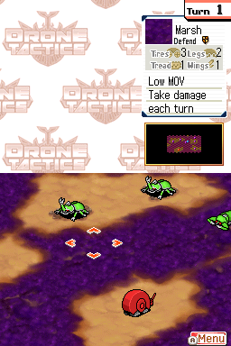
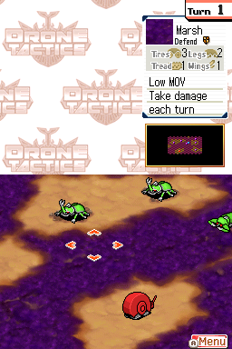

Drone Tactics

Not Complete on 2023-01-02
3 / 5
Release Date: May 12, 2008
Meta Score: 74
Screenshots
 

Notes
Some things to know about Drone Tactics: it's very obscure. Relatively few references online, no GameFAQs walkthrough and not a ton of info out there.
Drone Tatics is a tactics RPG like the many others on GBA and DS. It reminded me a lot of ZOE: Fist of Mars on GBA although I couldn't find any connection on a cursory research. It has a pretty offbeat story and theme, alien insects from another world need human help to turn into giant insect mechs and duke it out.
Gameplay is pretty straightforward tactics RPG stuff, with the addition of you having a deck of cards, basically special abilities you equip and can use X times per battle. There's no shuffling or drawing so the card thing doesn't really mean much. You can customise your mechs between missions with different weapons in the 3 slots for melee, guns, and artillery. There's item crafting and unlockable stuff in chests in missions, all the usual kind of thing.
The enemy AI is a bit weak. Enemies will pretty much always attack you in a predictable way, you can bait their attacks out simply enough. Sometimes the AI is clearly set to be passive until you come into range and you can take all the time you want to clear them out (aided by the fact you can heal up in your snail-base).
Unlike most tactics RPGs where your units will automatically hit back, in this game you get a choice of options: counter-attack, defend, or evade. Counter attacking is fine as long as you can tank the hit. Evading is totally all-or-nothing. I never found it very useful and mostly ignored the stat that affected it (although the AI would somtimes pick it and get lucky misses which was annoying). Defending however seemed very strong and the best option in most situations that you're not confident enough to counter attack. I often favoured defense-granting parts on my units for this reason.
It occasionally got frustrating when enemy units had high defense and would start defending when low on HP, making them hard to finish off, with a lot of attacks doing straight-up zero damage. The Beam weapon/barrier mechanic helps with this a bit... except when the enemy also has decent/high barrier, since most beam weapons are a bit weaker than the regular versions.
Honestly at times it goes pretty hard even on easy. I think the game is balanced around you taking advantage of the "Badlands" mode to grind and level up. Boss enemies in particular are often very strong and require a good ambush combined with battle cards to take them out. There seems to be some kind of invisible damage scaling based on level, not otherwise reflected in stats, so keeping yourself levelled up is important. It tends to feel quite all-or-nothing. Either you're doing fine ploughing through enemies by the dozen or one specific tough enemy can just screw up a whole mission. Luckily missions generally aren't super long so going away to regear, grind, or just try a different strategy doesn't bog down too much.
It's kind of fun though. Maybe not the most tactical depth ever, but the game moves at a nice pace and you've got a decent amount of options for customising your units and card deck and decent enough maps to play on.
Definitely a bit of a hidden gem since I knew nothing about it before and had fun, but ultimately still a bit medium and falling short of greatness. I ended up pitching it after it had been going on for a while as I was bogging down quite badly.